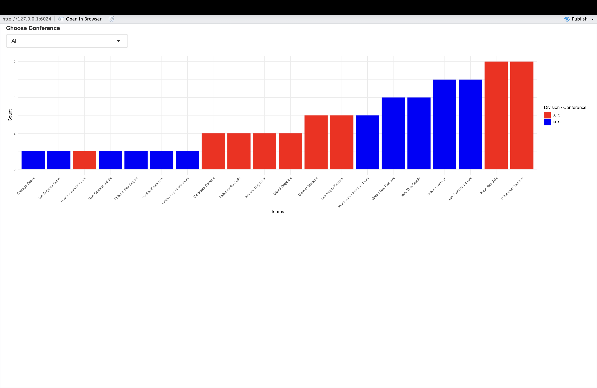

Sports Data Redesign Projects
1 Sports Data Redesign Projects
This page showcases two redesign projects focused on India’s Cricket Performance and NFL Super Bowl Wins. Both projects aim to reimagine data visualizations for clarity, engagement, and actionable insights.
1.1 India’s Cricket Performance Redesign
1.1.1 Introduction
This project focuses on redesigning visualizations of India’s cricket team performance metrics, including wins, losses, and key player contributions. By improving the clarity and storytelling of the original visuals, we aim to offer insights that align with strategic decision-making in the sport.
1.1.2 Original Visualization: A Critical Review

The original visualization had the following drawbacks: 1. Overuse of Pie Charts: Difficult to compare percentages across multiple charts. 2. Data Overload: Too much data presented simultaneously, making it hard to identify patterns. 3. Lack of Narrative: The chart failed to tell a compelling story about India’s performance.
1.1.3 Redesigned Visualization
1.1.3.1 Redesigned Bar Plot


The bar plot simplifies the data, allowing clear comparison between wins and losses over different years or tournaments.
1.1.4 Key Insights
- Consistency Over the Years: The bar plot reveals India’s consistent win ratio in bilateral series.
- Top Performers: The heatmap identifies players who made significant contributions in high-stakes matches.
1.2 NFL Super Bowl Wins Redesign Project
1.2.1 Introduction
This project reimagines visualizations of NFL Super Bowl victories, analyzing success across teams, divisions, and conferences. By improving upon the original sunburst chart, the redesign focuses on clarity, accessibility, and storytelling.
1.2.2 Original Visualization: A Critical Review

The original sunburst chart has several drawbacks: 1. Complexity vs. Utility: The radial layout obscures clarity and makes comparison difficult. 2. Design Preferences: Pie and sunburst charts distort data, violating best practices.
1.2.3 Redesigned Visualization
1.2.3.1 Redesigned Dot Plot

This dot plot provides clear, comparable data, categorizing teams by division and conference.
1.2.3.2 Interactive Bar Chart

This interactive bar chart allows users to: 1. Filter by AFC or NFC to explore team victories across conferences. 2. Drill down to divisions for specific comparisons.
1.2.4 Key Insights
- Clarity in Data Storytelling: Dot plots and bar charts make data more accessible.
- Engagement: Interactive elements encourage users to explore trends.
1.3 Conclusion
Both projects exemplify the power of redesigning sports data visualizations. By replacing complex and cluttered charts with clear, interactive visuals, these projects achieve: - Improved Analysis: Provides actionable insights into team performances. - Enhanced Engagement: Makes exploring sports data intuitive and informative.
These redesigns serve as a testament to the art of simplifying complexity and aligning visuals with academic rigor and storytelling.
1.4 References
1.4.1 Cricket Performance Redesign References
- ESPN Cricinfo Dataset. https://www.espncricinfo.com
- Wickramasinghe, L. (2020). “Analyzing Cricket Performance Metrics.” Journal of Sports Analytics.
- Chaturvedi, R. (2018). “Data-Driven Decisions in Cricket.” Data Science Quarterly.
1.4.2 NFL Super Bowl Wins Redesign References
- McCann, Adam E. “Super Bowl Winners.” Tableau Public, Tableau Software, 2020. https://public.tableau.com.